Nmap
Task 1 - Deploy
Press "Start Machine" and press complete
Task 2 - Introduction
What networking constructs are used to direct traffic to the right application on a server?
Ports
How many of these are available on any network-enabled computer?
65535
[Research] How many of these are considered "well-known"? (These are the "standard" numbers mentioned in the task)
1024
Task 3 - Nmap Switches
What is the first switch listed in the help menu for a 'Syn Scan' (more on this later!)? (nmap -h)
-sS
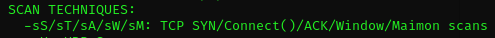Which switch would you use for a "UDP scan"?
-sU
If you wanted to detect which operating system the target is running on, which switch would you use?
-O
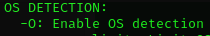Nmap provides a switch to detect the version of the services running on the target. What is this switch?
-sV

The default output provided by nmap often does not provide enough information for a pentester. How would you increase the verbosity?
-v

Verbosity level one is good, but verbosity level two is better! How would you set the verbosity level to two?
(Note: it's highly advisable to always use at least this option)
-vv
We should always save the output of our scans -- this means that we only need to run the scan once (reducing network traffic and thus chance of detection), and gives us a reference to use when writing reports for clients.
What switch would you use to save the nmap results in three major formats?
-oA
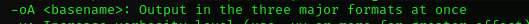What switch would you use to save the nmap results in a "normal" format?
-oN
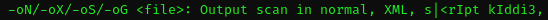A very useful output format: how would you save results in a "grepable" format?
-oG
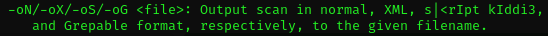Sometimes the results we're getting just aren't enough. If we don't care about how loud we are, we can enable "aggressive" mode. This is a shorthand switch that activates service detection, operating system detection, a traceroute and common script scanning.
How would you activate this setting?
-A
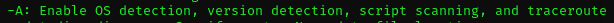Nmap offers five levels of "timing" template. These are essentially used to increase the speed your scan runs at. Be careful though: higher speeds are noisier, and can incur errors!
How would you set the timing template to level 5?
-T5
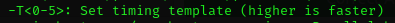We can also choose which port(s) to scan.
How would you tell nmap to only scan port 80?
-p 80
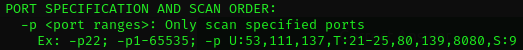How would you tell nmap to scan ports 1000-1500?
-p 1000-1500
A very useful option that should not be ignored:
How would you tell nmap to scan all ports?
-p-
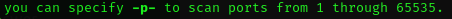How would you activate a script from the nmap scripting library (lots more on this later!)?
--script
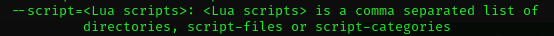How would you activate all of the scripts in the "vuln" category?
--script=vuln
Task 4 - (Scan Types) Overview
Read and press complete
Task 5 - (Scan Types) TCP Connect Scans
Which RFC defines the appropriate behaviour for the TCP protocol?
RFC 793
If a port is closed, which flag should the server send back to indicate this?
RST
Task 6 - (Scan Types) SYN Scans
There are two other names for a SYN scan, what are they?
Half-Open, Stealth
Can Nmap use a SYN scan without Sudo permissions (Y/N)?
N
Task 7 - (Scan Types) UDP Scans
If a UDP port doesn't respond to an Nmap scan, what will it be marked as?
open|filtered
When a UDP port is closed, by convention the target should send back a "port unreachable" message. Which protocol would it use to do so?
ICMP
Task 8- (Scan Types) NULL, FIN and Xmas
Which of the three shown scan types uses the URG flag?
xmas
There are two other names for a SYN scan, what are they?
Firewall Evasion
Which common OS may respond to a NULL, FIN or Xmas scan with a RST for every port?
Microsoft Windows
Task 9- (Scan Types) ICMP Network Scanning
How would you perform a ping sweep on the 172.16.x.x network (Netmask: 255.255.0.0) using Nmap? (CIDR notation)
nmap -sn 172.16.0.0/16
Task 10- (NSE Scripts) Overview
What language are NSE scripts written in?
Lua
Which category of scripts would be a very bad idea to run in a production environment?
intrusive
Task 11- (NSE Scripts) Working with the NSE
What optional argument can the ftp-anon.nse script take?
maxlist
Read the ftp-anon doc.
Task 12- (NSE Scripts) Searching for Scripts
Search for "smb" scripts in the /usr/share/nmap/scripts/ directory using either of the demonstrated methods. What is the filename of the script which determines the underlying OS of the SMB server?
grep smb /usr/share/nmap/scripts/script.db | grep -e '-os'
smb-os-discovery.nse
Read through this script. What does it depend on?
rep dependencies /usr/share/nmap/scripts/smb-os-discovery.nse
smb-brute
Task 13- Firewall Evasion
Which simple (and frequently relied upon) protocol is often blocked, requiring the use of the -Pn switch?
ICMP
[Research] Which Nmap switch allows you to append an arbitrary length of random data to the end of packets?
--data-length
Task 14- Practical
Does the target (MACHINE_IP)respond to ICMP (ping) requests (Y/N)?
N
Perform an Xmas scan on the first 999 ports of the target -- how many ports are shown to be open or filtered?
999
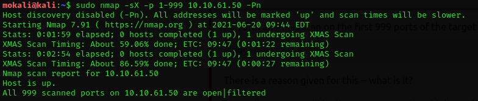There is a reason given for this -- what is it?
Note: The answer will be in your scan results. Think carefully about which switches to use -- and read the hint before asking for help!
No Response
Perform a TCP SYN scan on the first 5000 ports of the target -- how many ports are shown to be open?
5
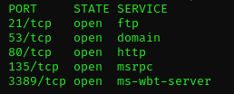Open Wireshark (see Cryillic's Wireshark Room for instructions) and perform a TCP Connect scan against port 80 on the target, monitoring the results. Make sure you understand what's going on.
No answer needed
Deploy the ftp-anon script against the box. Can Nmap login successfully to the FTP server on port 21? (Y/N)
Y
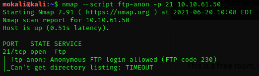Task 15- Conclusion
Read and press complete